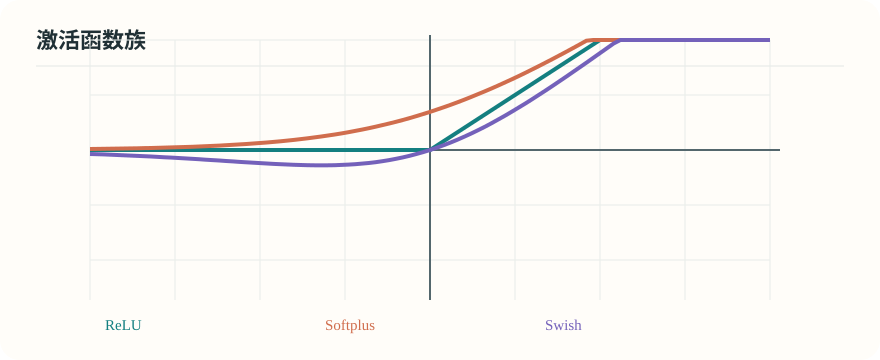
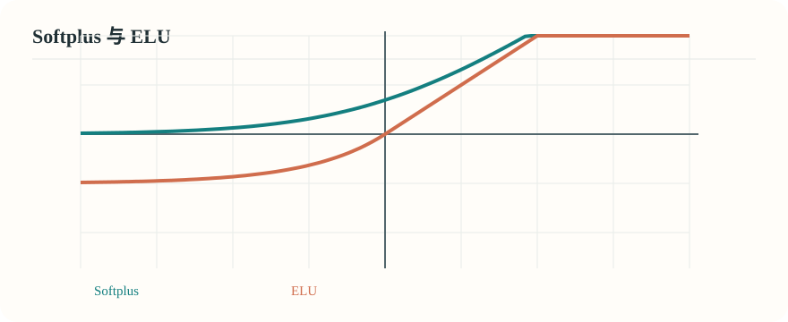
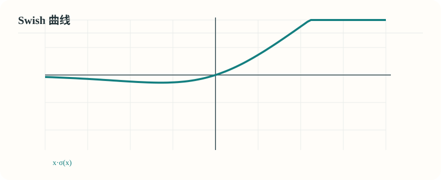
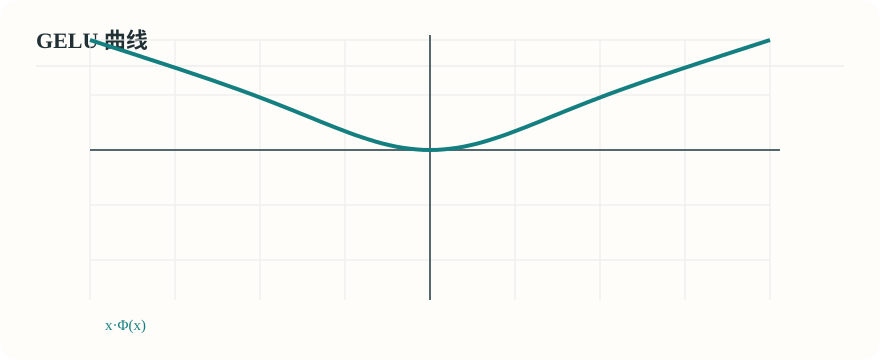
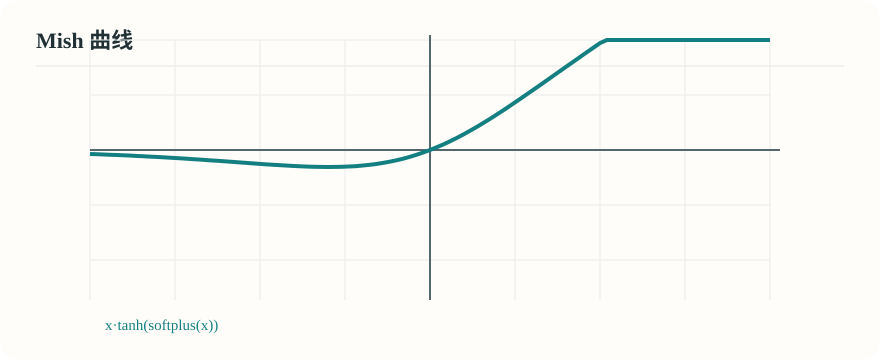
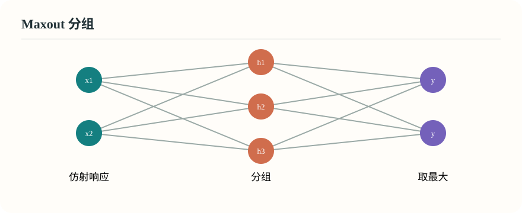
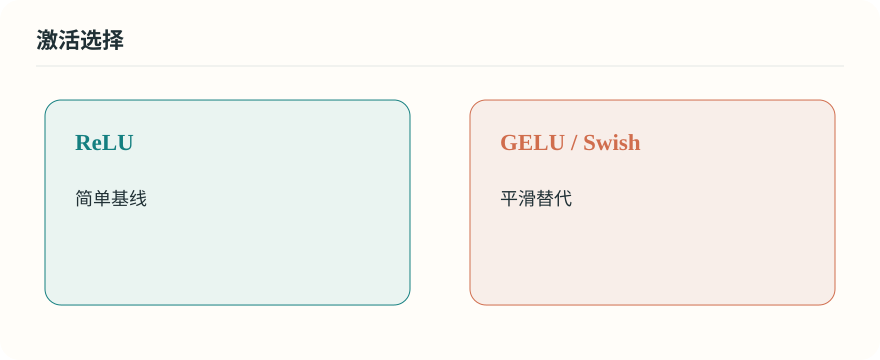

深度前馈网络 · MODULE 08
从 Softplus 到 GELU：其他隐藏单元
把激活函数看作设计空间，而不是不断追逐新名字。
ReLU 是强基线但不是唯一选择。平滑、非单调、自归一化和分段线性设计，分别针对不同优化或表示问题。
ReLU 是强基线但不是唯一选择。平滑、非单调、自归一化和分段线性设计，分别针对不同优化或表示问题。
1. 不存在通用冠军
激活函数会改变梯度、输出分布、计算成本和归纳偏置。某个模型上的提升不等于在所有数据集和架构上都更好。先明确要解决的问题，再选择候选。

2. Softplus：平滑版 ReLU
Softplus=log(1+eˣ)，处处可微；大正值时接近线性，大负值时接近 0。平滑性避免了 ReLU 在 0 点不可微，但计算更复杂，负区导数仍会变小。

3. ELU 与 SELU
ELU 负半轴趋向负饱和值；SELU 加入固定缩放常数，在论文指定的初始化、网络结构和正则化条件下讨论自归一化，不能无条件推广。
4. Swish：输入乘以门控
Swish(x)=xσ(βx)，β=1 时为常见形式。它平滑且非单调；原论文报告在若干深层模型与任务中的实验结果，不是普遍性能保证。

5. GELU：平滑加权输入
GELU=xΦ(x)，Φ 为标准正态分布累积分布函数。GELU 常见于 BERT 等 Transformer 变体；原始 Transformer 论文的前馈子层使用 ReLU。

6. Mish：平滑非单调组合
Mish=x·tanh(softplus(x))，由 Diganta Misra 提出。论文报告若干基准结果；阅读时应同时保留模型、数据集、指标和训练设定。

7. Maxout：分组取最大
Maxout 将多个仿射响应分组，输出组内最大值，可学习分段线性形状。表达灵活，但通常需要更多参数和计算。

8. 用受控实验代替排行榜
固定数据、架构、优化器、训练预算和随机种子集合，比较验证指标、训练速度与资源成本。若优势只出现在单一设置，结论就应限定在该范围。

交互实验
切换函数并观察输出和数值导数。
交互用于核对公式与数值关系；不是完整训练基准。
可运行示例
import torch
import torch.nn.functional as F
x=torch.linspace(-4,4,9)
print(F.gelu(x), F.silu(x), F.mish(x))参考资料
- Deep Learning, Goodfellow et al., Chapter 6.3
- Searching for Activation Functions — Swish
- Gaussian Error Linear Units
- Self-Normalizing Neural Networks
- Mish: A Self Regularized Non-Monotonic Activation Function
教材结论、论文结论与本页推导分别标注；图示为独立绘制。